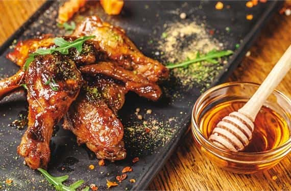

Honey chiecken thighs

This recipe was unkonw to me until 5 minutes ago and I got so curious about it I decided it will be our dinner
tonight.
Join us and with another tasty dish.
Let's start with ingredients:
- for the chicken:
- chicken wings
- chives
- lemon
- olive oil
- salt
- pepper
- fresh chili
- for the sauce:
- honey
- chilli powder
- lemon
- balsamic vinegar
- ginger
Now that you have all the ingridients let's cook:
- clean your thights
- add salt and pepper
- heat some olive oil on a pan
- when oil is heat put the chicken thights in
- after a couple of minutes grate some ginger on it
- turn your chicken around
- while the chicken is cooking let's deal with the sauce
- in a bowl mix honey, lemon juice, balcamic vinegar,chilli powder, and grated ginger
- stir well
- when your chicken tights are golden add some souce little by little
- add little water
- cover your pan with the lid
- leave it cooking for another 25 minutes stirring it from time to time
- finely cut chives and fresh pepper
- cut your lemon
- when chicken cooking time is done remove the lid and leave it's sauce thicken 2-3 minutes
- turn off the heating
- add chives, fresh pepper, lemon slices
- enjoy
Can't wait to taste it myself.